El Castillo de los Sueños
Preparando la magia…
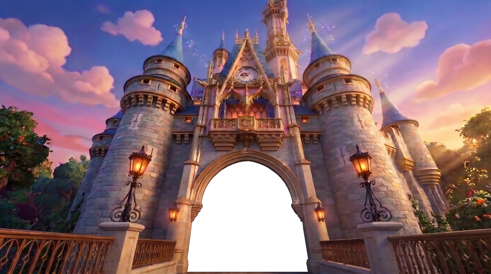
Una experiencia interactiva
El Castillo
de los Sueños
Acompaña a Alaia en una aventura mágica por los talleres creativos de Walt Disney
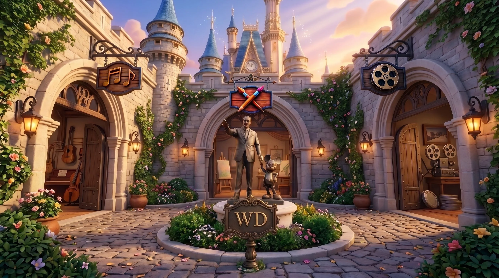
Tres puertas. Mil historias por crear.
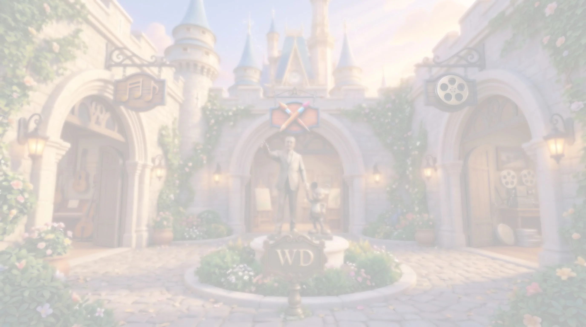
El hombre detrás de la magia
Walt Disney
Un cuaderno, un ratón y un castillo de sueños.
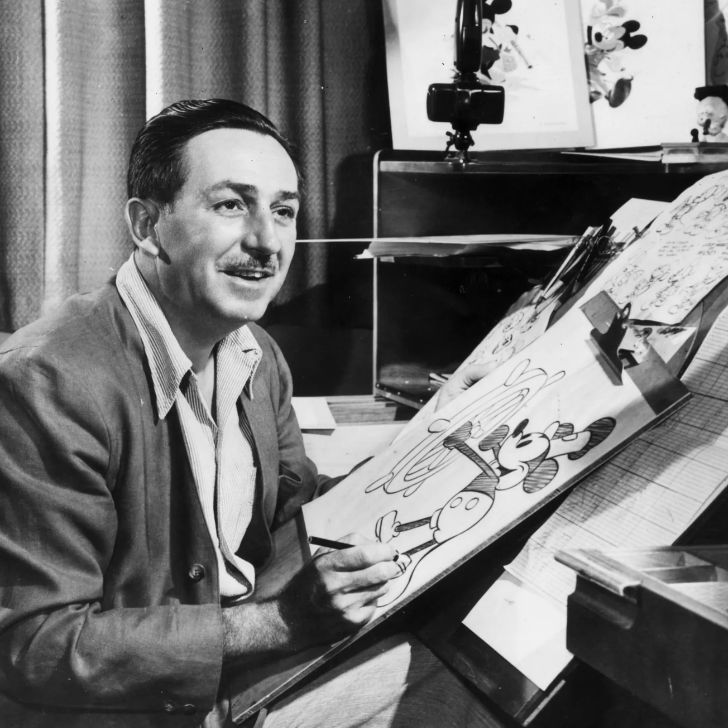
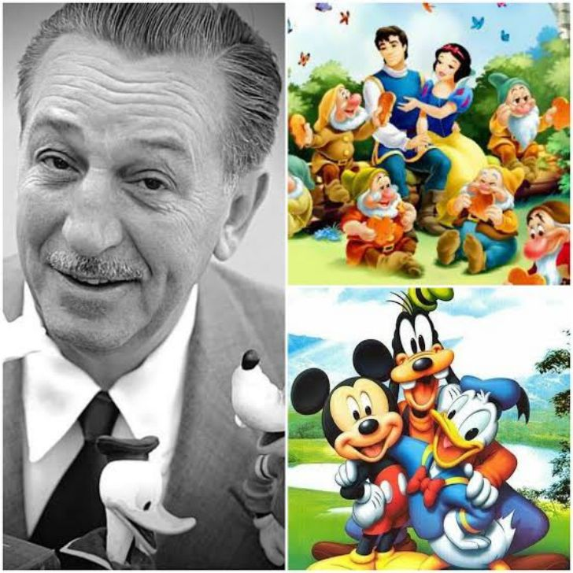
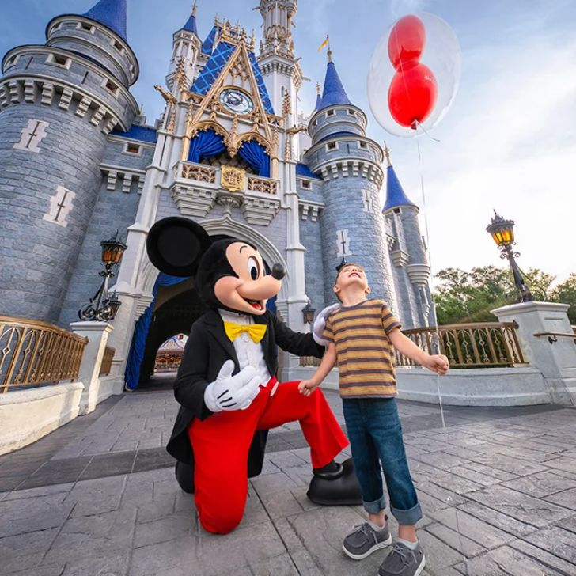
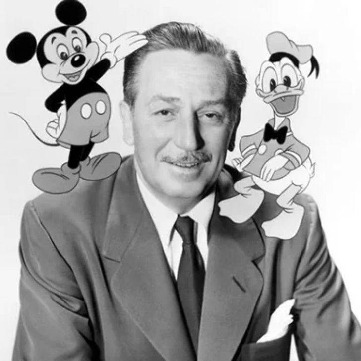
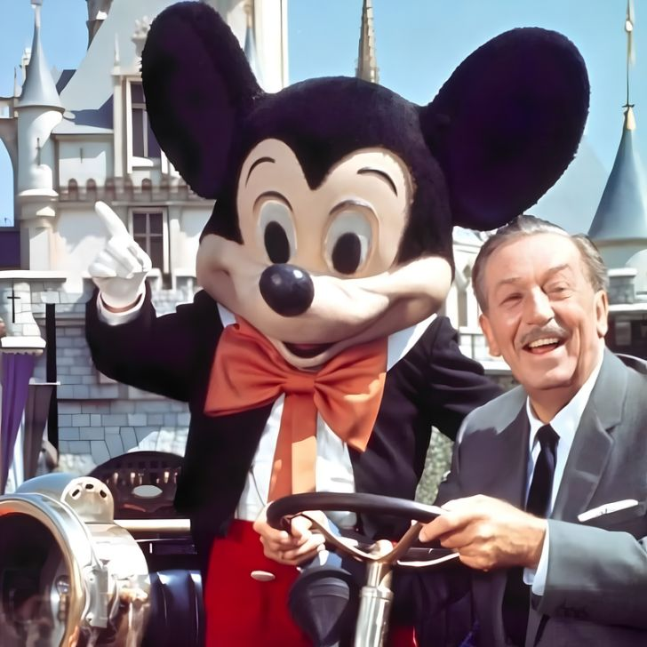
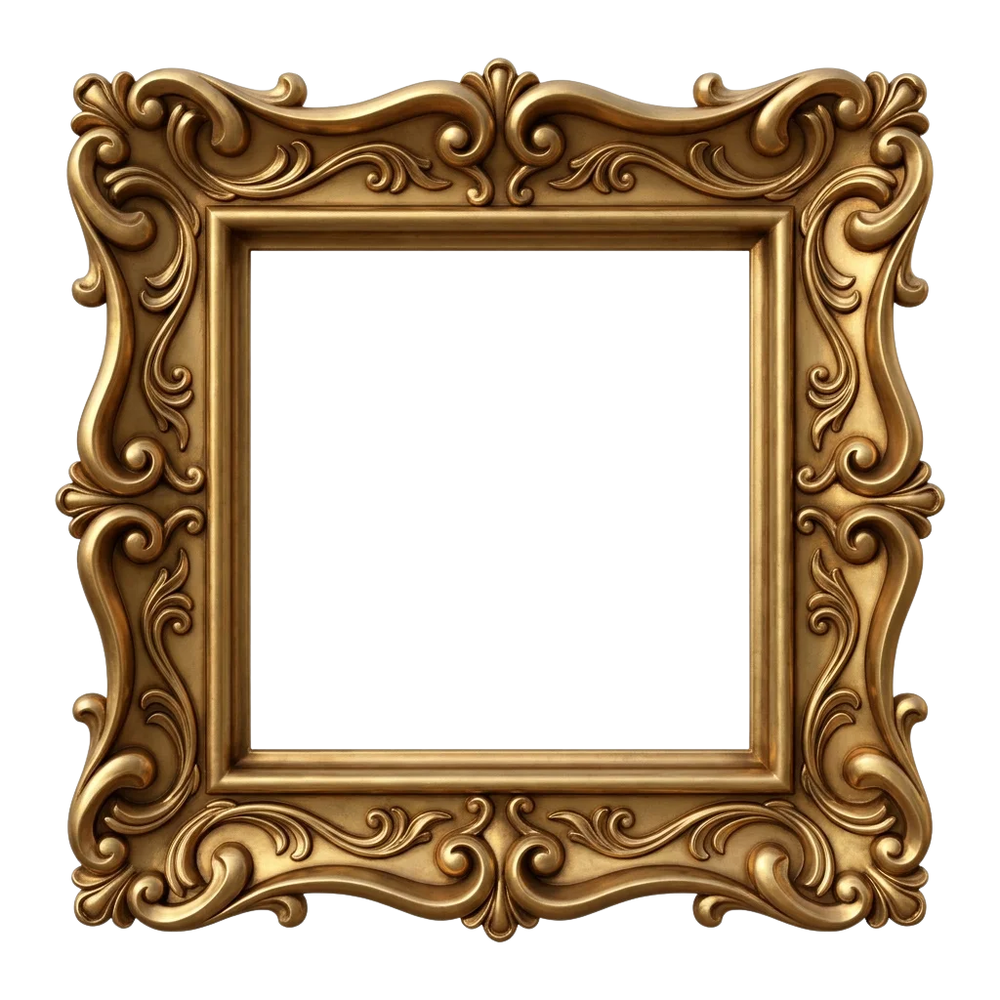
Walt Disney · 1901 — 1966
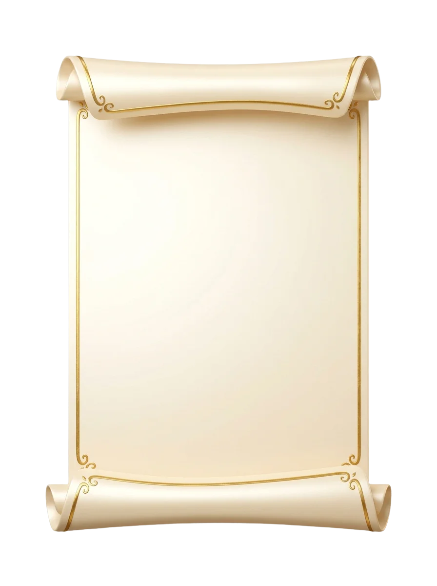
El Niño que Amaba Dibujar
Antes de construir castillos mágicos, Walt Disney era un niño curioso al que le encantaba dibujar animales en su cuaderno y soñar con historias donde los lápices cobraban vida.
— Walt Disney✦ Descubre las tres etapas de su historia
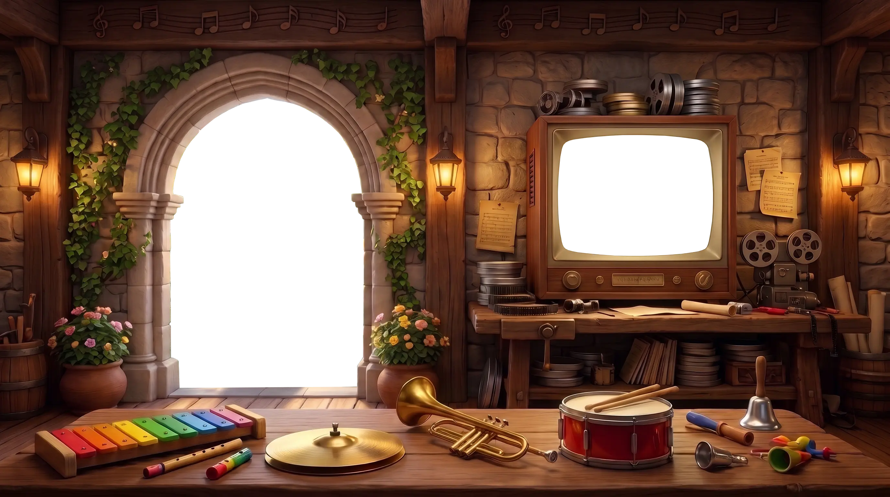
Taller de Música
La melodía del cine
Toca los instrumentos para musicalizar la escena
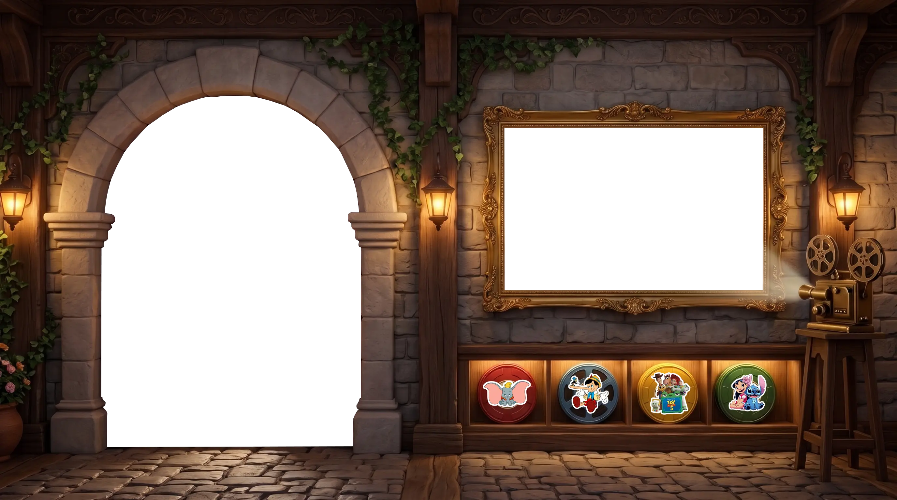
Taller de Video
La magia en movimiento
Elige un rollo y enciende el proyector
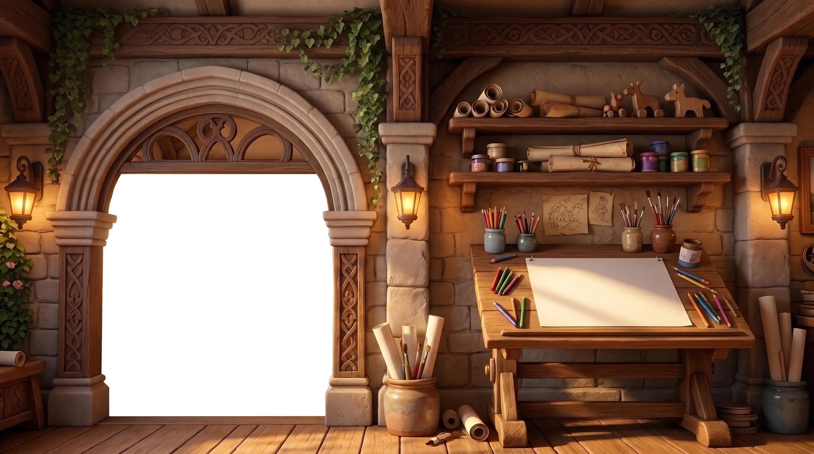
Taller de Dibujo
Dar vida a un trazo
Acércate a la mesa y descubre los bocetos
Los dibujos cobran vida…
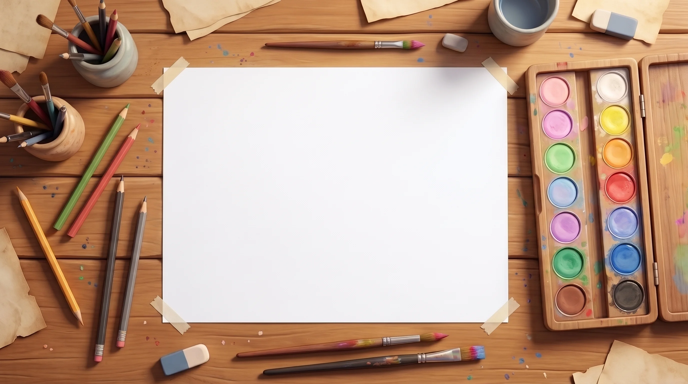
La mesa mágica
Bocetos que cobran vida
Arrastra el pincel mágico sobre el dibujo
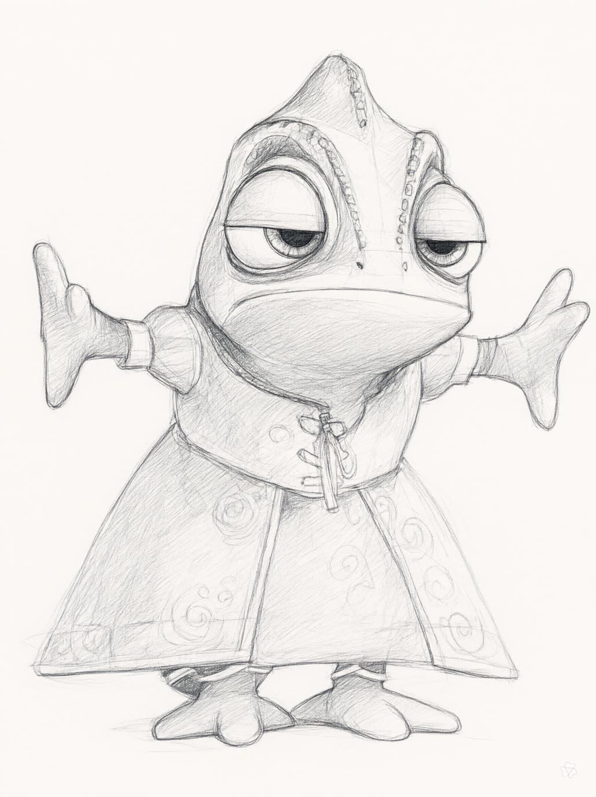
?debug=1 para mostrar/ocultar zonas.
Edita las posiciones en css/styles.css.